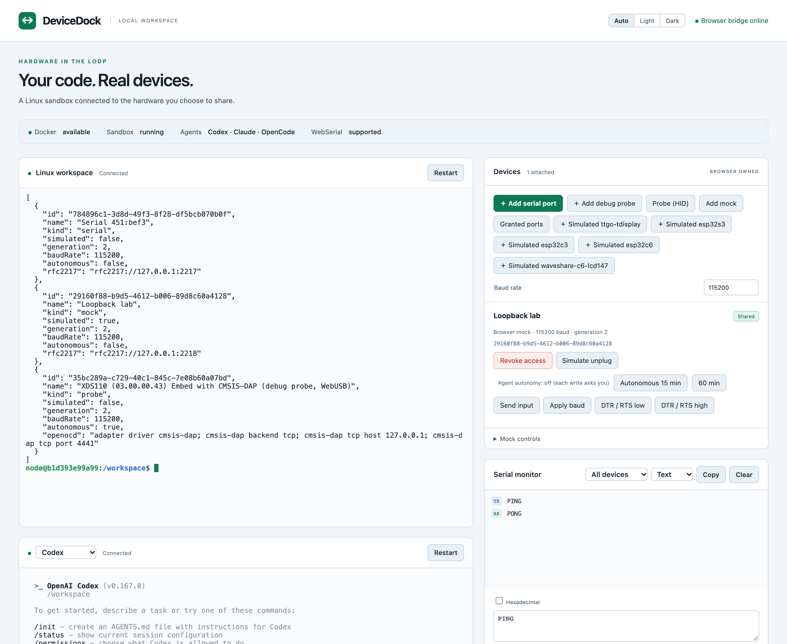

Your AI agent, on your real hardware.
DeviceDock lets coding agents like Codex and Claude Code build, flash and debug the boards on your desk, from a locked-down Linux sandbox. You share each device from the browser and approve what touches it.
How it works
The agent never sees your USB ports. Your browser holds the device and passes on only the requests you allow.
Start DeviceDock
One command starts the sandbox and the local web page. Nothing is reachable from outside your machine.
Share a device
Pick a serial port or debug probe in Chrome. Only that device becomes visible to the sandbox.
Let the agent work
It builds firmware and talks to the board with the usual tools: OpenOCD, esptool, pyserial.
Approve the writes
Every write or reset waits for your click, unless you switch on a time-limited autonomous mode.
What it works with today
Tested with TI LaunchPads and ESP32 boards. Standard tools run unchanged inside the sandbox.
Serial ports
Any USB serial device through Web Serial, reachable in the sandbox as an RFC 2217 port for pyserial, esptool and PlatformIO.
Debug probes
CMSIS-DAP probes such as the XDS110 on LaunchPads, driven by OpenOCD for flashing, backups and GDB.
ESP32 flashing
esptool resets the chip into download mode over the shared port, then writes and verifies the image.
Contiki-NG
A ready Contiki-NG tree and toolchains in the sandbox image. Build hello-world for a LaunchPad in one command.
Simulators
Run the same firmware without hardware: Cooja-NG for Contiki-NG boards and esp32sim for ESP32s in the browser.
Your agent
Codex, Claude Code and OpenCode come installed, with terminals in the page and an MCP server for device access.

You stay in charge of the hardware
Real hardware can be damaged or bricked. These limits are built in, not optional.
- Nothing is shared until you share itThe sandbox sees only the devices you pick in the browser, and loses them when you revoke access or close the page.
- Writes need your approvalEach write, reset or flash on real hardware asks first. A probe session is approved once and ends after 10 idle minutes.
- Autonomy has an end timeAutonomous mode lasts at most two hours and switches itself off.
- A sandbox that keeps to itselfNo home folder, credentials, Docker socket or host devices are mounted. Everything listens on your own machine only.
Get started
You need Docker and Chrome or Edge on macOS or Linux. The installer downloads the single backend program, checks its checksum, and puts a devicedock command in ~/.local/bin; no root needed.
Prefer step by step? The quick start guide covers Mac and Linux, picking a sandbox image, and your first board.
# install, then start everything $ curl -fsSL https://github.com/joakimeriksson/devicedock/releases/latest/download/install.sh | sh $ devicedock # then, in the console devicedock> o # open the page in Chrome